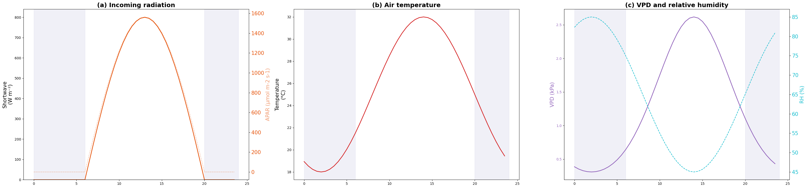
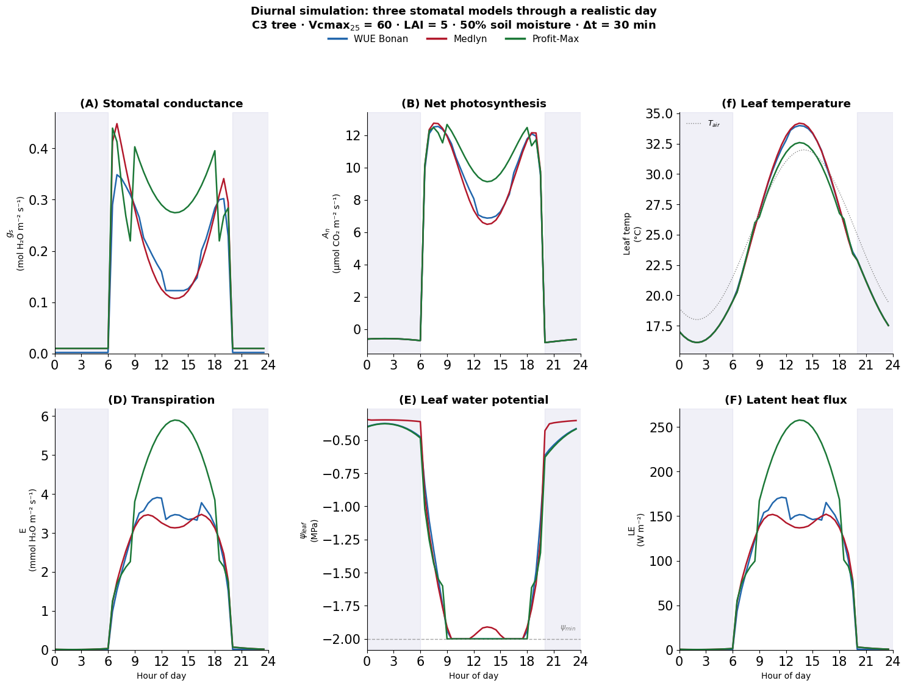

import copy
import numpy as np
import matplotlib.pyplot as plt
from pprint import pprint
from matplotlib.lines import Line2D
from plant_hydraulics.utils import satvap
from plant_hydraulics.root_parms import root_params
from plant_hydraulics.soil_params import soil_params
from plant_hydraulics.leaf_fluxes import leaf_fluxes
from plant_hydraulics.soil_resistance import soil_resistance
from plant_hydraulics.leaf_phys_params import leaf_phys_params
from plant_hydraulics.parameter_classes import (
PhysCon,
Params,
Ground,
Soil,
RootVar,
Leaf,
Flux,
Atmos,
)
from plant_hydraulics.utils import diurnal_temperature, diurnal_par, diurnal_relhumTutorial 2: Stomatal model comparisons
1. Set up soil and plant (time-invariant parts)
def setup_plant_and_soil():
# General params ------------------------------------------------------------
params = Params()
physcon = PhysCon()
# Root params ---------------------------------------------------------------
rootvar = RootVar()
rootvar = root_params(rootvar)
# Soil params ---------------------------------------------------------------
soil = Soil()
# Loam
soil.texture = 5
soil = soil_params(soil)
soil_frac = 0.50
for each_soil_layer in range(soil.nlevsoi):
vol = soil_frac * soil.watsat[each_soil_layer]
soil.h2osoi_vol.append(vol)
soil.psi.append(
soil.psisat[each_soil_layer]
* (vol / soil.watsat[each_soil_layer]) ** (-soil.bsw[each_soil_layer])
)
# Leaf params ---------------------------------------------------------------
leaf = Leaf()
leaf.c3psn = 1
leaf.colim = 1
leaf = leaf_phys_params(params, physcon, leaf)
# Flux params ---------------------------------------------------------------
flux = Flux()
flux.height = 15.0
rootvar.biomass = 500.0
flux.lai = 5.0
flux.rplant = 1.0 / leaf.gplant
flux = soil_resistance(physcon, leaf, rootvar, soil, flux)
flux.lsc = 1.0 / (flux.rsoil + flux.rplant)
# Timestep = 30 minutes
flux.dt = 30.0 * 60.0 # seconds
return params, physcon, leaf, fluxSet up plant and soil objects
pprint(setup_plant_and_soil())(Params(vis=0, nir=1),
PhysCon(grav=9.80665,
tfrz=273.15,
sigma=5.67e-08,
mmdry=0.02897,
mmh2o=0.01802,
cpd=1005.0,
cpw=1846.0,
rgas=8.31446,
visc0=1.33e-05,
Dh0=1.89e-05,
Dv0=2.18e-05,
Dc0=1.38e-05,
denh2o=1000.0),
Leaf(c3psn=1,
colim=1,
vcmax25=60.0,
jmax25=100.19999999999999,
rd25=0.8999999999999999,
kc25=404.9,
ko25=278.4,
cp25=42.75,
kcha=79430.0,
koha=36380.0,
cpha=37830.0,
vcmaxha=65330.0,
jmaxha=43540.0,
rdha=46390.0,
vcmaxhd=150000.0,
jmaxhd=150000.0,
rdhd=150000.0,
vcmaxse=490.0,
jmaxse=490.0,
rdse=490.0,
vcmaxc=np.float64(1.2068286010531608),
jmaxc=np.float64(1.2068286010531608),
rdc=np.float64(1.2068286010531608),
phi_psii=0.85,
theta_j=0.9,
colim_c3=0.98,
colim_c4a=0.8,
colim_c4b=0.95,
qe_c4=0.05,
kp25_c4=0.0,
dleaf=0.05,
emiss=0.98,
rho=[0.1, 0.4],
tau=[0.1, 0.4],
iota=750.0,
capac=2500.0,
minl_wp=-2.0,
gplant=4.0,
stomatal_model='optimization',
g0=0.01,
g1_medlyn=4.45,
a_psi=4.0,
psi_50=-2.5),
Flux(height=15.0,
lai=5.0,
rplant=0.25,
rsoil=np.float64(0.2501189655712912),
lsc=np.float64(1.9995242509103597),
psi_soil=np.float64(-0.19656231067350272),
psi_leaf=0.0,
et_loss=[np.float64(0.4095396351696566),
np.float64(0.241817185048064),
np.float64(0.22709106869325216),
np.float64(0.07917398504781505),
np.float64(0.0372269477272586),
np.float64(0.004525039293622161),
np.float64(0.0005500311641962397),
np.float64(7.288256126632329e-05),
np.float64(3.1776444437281276e-06),
np.float64(4.6949970976737326e-08),
np.float64(7.004544949034277e-10)],
swinc=[0.0, 0.0],
swflx=[0.0, 0.0],
apar=0.0,
qa=0.0,
tleaf=0.0,
rnet=0.0,
lwrad=0.0,
shflx=0.0,
lhflx=0.0,
etflx=0.0,
gbh=0.0,
gbv=0.0,
gbc=0.0,
gs=0.0,
vcmax=0.0,
jmax=0.0,
cp=0.0,
kc=0.0,
ko=0.0,
je=0.0,
kp_c4=0.0,
rd=0.0,
ac=0.0,
aj=0.0,
ap=0.0,
ag=0.0,
an=0.0,
cs=0.0,
ci=0.0,
hs=0.0,
vpd=0.0,
dt=1800.0))params, physcon, leaf, flux_template = setup_plant_and_soil()2. Set up atmosphere
def update_atmosphere(physcon, params, leaf, flux, hour):
"""
Update atmospheric forcing for a given hour of the day.
This is called at each timestep to set the time-varying boundary
conditions: temperature, humidity, radiation.
IMPORTANT: This modifies flux IN PLACE for radiation terms,
and returns a new atmos object.
"""
atmos = Atmos()
# Constants -----------------------------------------------------------------
# m/s
atmos.wind = 1.0
# Pa
atmos.patm = 101325.0
# µmol/mol
atmos.co2air = 380.0
# mmol/mol
atmos.o2air = 209.0
# Time-varying forcing ------------------------------------------------------
tair_c = diurnal_temperature(hour)
relhum = diurnal_relhum(hour)
# W/m² total shortwave
fsds = diurnal_par(hour)
# K
atmos.tair = physcon.tfrz + tair_c
atmos.relhum = relhum
# Vapor pressure from T and RH
esat_air, _ = satvap(tair_c)
atmos.eair = esat_air * (relhum / 100.0)
# Derived atmospheric properties --------------------------------------------
atmos.rhomol = atmos.patm / (physcon.rgas * atmos.tair)
atmos.qair = (
physcon.mmh2o
/ physcon.mmdry
* atmos.eair
/ (atmos.patm - (1 - physcon.mmh2o / physcon.mmdry) * atmos.eair)
)
atmos.rhoair = (
atmos.rhomol
* physcon.mmdry
* (1 - (1 - physcon.mmh2o / physcon.mmdry) * atmos.eair / atmos.patm)
)
atmos.mmair = atmos.rhoair / atmos.rhomol
atmos.cpair = (
physcon.cpd * (1 + (physcon.cpw / physcon.cpd - 1) * atmos.qair) * atmos.mmair
)
# Longwave sky radiation, varies with temperature ---------------------------
# Simple approximation: clear-sky emissivity ≈ 0.7 + small T correction
atmos.irsky = 0.70 * physcon.sigma * atmos.tair**4
# Radiation absorbed by leaf ------------------------------------------------
# VIS, NIR
ground_albedo = [0.1, 0.2]
atmos.swsky[params.vis] = 0.5 * fsds
atmos.swsky[params.nir] = 0.5 * fsds
tg = atmos.tair
ground_lw = physcon.sigma * tg**4
flux.swinc = [
atmos.swsky[params.vis] * (1 + ground_albedo[params.vis]),
atmos.swsky[params.nir] * (1 + ground_albedo[params.nir]),
]
flux.swflx = [
flux.swinc[0] * (1 - leaf.rho[0] - leaf.tau[0]),
flux.swinc[1] * (1 - leaf.rho[1] - leaf.tau[1]),
]
# µmol photons/m²/s
flux.apar = flux.swflx[0] * 4.6
flux.qa = flux.swflx[0] + flux.swflx[1] + leaf.emiss * (atmos.irsky + ground_lw)
# Initial leaf temperature guess = air temperature
flux.tleaf = atmos.tair
return atmos3. Time-stepping loop
# Time axis: 0:00 to 23:30 in 30-min steps
# 30 minutes
dt_hours = 0.5
hours = np.arange(0.0, 24.0, dt_hours)
# 48 timesteps
n_steps = len(hours)4. Define gs models and create empty objects for storing results
# Model definitions
models = {
"optimization": {"label": "WUE Bonan", "color": "#2166ac", "marker": "o"},
"medlyn": {"label": "Medlyn", "color": "#b2182b", "marker": "s"},
"profit_max": {"label": "Profit-Max", "color": "#1b7837", "marker": "D"},
}# Storage for forcings (same for all models)
forcings = {
# W/m²
"par": np.zeros(n_steps),
# °C
"tair": np.zeros(n_steps),
# %
"rh": np.zeros(n_steps),
# kPa
"vpd": np.zeros(n_steps),
}
print(forcings){'par': array([0., 0., 0., 0., 0., 0., 0., 0., 0., 0., 0., 0., 0., 0., 0., 0., 0.,
0., 0., 0., 0., 0., 0., 0., 0., 0., 0., 0., 0., 0., 0., 0., 0., 0.,
0., 0., 0., 0., 0., 0., 0., 0., 0., 0., 0., 0., 0., 0.]), 'tair': array([0., 0., 0., 0., 0., 0., 0., 0., 0., 0., 0., 0., 0., 0., 0., 0., 0.,
0., 0., 0., 0., 0., 0., 0., 0., 0., 0., 0., 0., 0., 0., 0., 0., 0.,
0., 0., 0., 0., 0., 0., 0., 0., 0., 0., 0., 0., 0., 0.]), 'rh': array([0., 0., 0., 0., 0., 0., 0., 0., 0., 0., 0., 0., 0., 0., 0., 0., 0.,
0., 0., 0., 0., 0., 0., 0., 0., 0., 0., 0., 0., 0., 0., 0., 0., 0.,
0., 0., 0., 0., 0., 0., 0., 0., 0., 0., 0., 0., 0., 0.]), 'vpd': array([0., 0., 0., 0., 0., 0., 0., 0., 0., 0., 0., 0., 0., 0., 0., 0., 0.,
0., 0., 0., 0., 0., 0., 0., 0., 0., 0., 0., 0., 0., 0., 0., 0., 0.,
0., 0., 0., 0., 0., 0., 0., 0., 0., 0., 0., 0., 0., 0.])}# Storage for model outputs
results = {}
for each_gs_model in models:
results[each_gs_model] = {
"gs": np.zeros(n_steps),
"an": np.zeros(n_steps),
"tleaf": np.zeros(n_steps),
"etflx": np.zeros(n_steps),
"psi_leaf": np.zeros(n_steps),
"lhflx": np.zeros(n_steps),
"gplant": np.zeros(n_steps),
}5. Create forcings
# Record forcing first (for plotting)
for each_i, hour in enumerate(hours):
tair_c = diurnal_temperature(hour)
rh = diurnal_relhum(hour)
# VPD
esat, _ = satvap(tair_c)
forcings["vpd"][each_i] = esat * (1.0 - rh / 100.0) / 1000.0
# PAR
forcings["par"][each_i] = diurnal_par(hour)
# Temperature air
forcings["tair"][each_i] = tair_c
# Relative humidity
forcings["rh"][each_i] = rhprint("Forcing summary:")
print(f" Temperature: {forcings['tair'].min():.1f} - {forcings['tair'].max():.1f} °C")
print(f" RH: {forcings['rh'].min():.1f} - {forcings['rh'].max():.1f} %")
print(f" VPD: {forcings['vpd'].min():.2f} - {forcings['vpd'].max():.2f} kPa")
print(f" PAR peak: {forcings['par'].max():.0f} W/m²")Forcing summary:
Temperature: 18.0 - 32.0 °C
RH: 45.0 - 85.0 %
VPD: 0.31 - 2.62 kPa
PAR peak: 800 W/m²Plot forcings

6. Run the models
for each_model in models:
print(f" Running {each_model} model...", end="", flush=True)
# Fresh flux for this model's run -------------------------------------------
flux = copy.deepcopy(flux_template)
leaf_m = copy.deepcopy(leaf)
# Initial conditions at midnight --------------------------------------------
# psi_leaf at midnight: equilibrated with soil (near psi_soil)
# This is the predawn water potential, Slightly below psi_soil
flux.psi_leaf = flux.psi_soil - 0.05
# Edit leaf model string ----------------------------------------------------
leaf_m.stomatal_model = each_model
# Run the model -------------------------------------------------------------
for each_i, each_half_hour in enumerate(hours):
# a) Update atmospheric forcing for this timestep
atmos = update_atmosphere(physcon, params, leaf_m, flux, each_half_hour)
# b) Run the stomatal model
# This internally solves:
# boundary layer → energy balance → photosynthesis → water potential
# The water potential calculation uses flux.psi_leaf (from previous
# timestep) and flux.dt (30 min) to compute the new psi_leaf.
flux = leaf_fluxes(physcon, atmos, leaf_m, flux)
# c) Store results
results[each_model]["gs"][each_i] = flux.gs
results[each_model]["an"][each_i] = flux.an
# Convert from C to K
results[each_model]["tleaf"][each_i] = flux.tleaf - physcon.tfrz
# Convert to mmol/m²/s
results[each_model]["etflx"][each_i] = flux.etflx * 1000
results[each_model]["lhflx"][each_i] = flux.lhflx
# d) psi_leaf carries over to next timestep
#
# The flux object already has
# the updated psi_leaf from leaf_fluxes(). When the next
# timestep calls leaf_water_potential(), it will use this
# value as y0 (the "current water level in the bathtub").
#
# Similarly, tleaf carries over as the initial guess for
# the Newton-Raphson energy balance solver.
results[each_model]["psi_leaf"][each_i] = flux.psi_leaf Running optimization model... Running medlyn model... Running profit_max model...Plot model results
